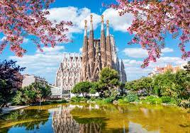

Barcelona, Spain
Barcelona is a captivating city for a city break, offering a combination of stunning architecture including Gaudí's masterpieces like Sagrada Familia and Park Güell, a vibrant cultural scene with world-class museums like the Picasso Museum, beautiful sandy beaches along the Mediterranean coastline, mouthwatering cuisine ranging from tapas to paella, and a lively atmosphere in the vibrant neighborhoods of Las Ramblas and the Gothic Quarter. Additionally, visitors can explore the bustling La Boqueria market, enjoy panoramic views from Montjuïc hill, and immerse themselves in the energetic nightlife of the city.
Paris, France

Paris is a captivating city for a city break, offering a mix of iconic landmarks like the Eiffel Tower and Louvre Museum, a romantic ambiance, exquisite cuisine, charming neighborhoods like Montmartre and Le Marais, and a rich artistic and cultural heritage that makes it an ideal destination for art lovers, history enthusiasts, and food connoisseurs alike. Additionally, visitors can stroll along the Seine River, explore the vibrant Latin Quarter, indulge in world-class shopping on the Champs-Élysées, and experience the enchanting atmosphere of the historic neighborhoods such as Saint-Germain-des-Prés.
London, England

London is a captivating city for a city break due to its rich history, iconic landmarks like Buckingham Palace and the Tower of London, vibrant cultural scene, diverse culinary experiences, world-class museums such as the British Museum and Tate Modern, picturesque parks like Hyde Park and Regents Park, bustling markets like Camden Market and Borough Market, a thriving theater district in the West End, and the opportunity to explore the charming neighborhoods of Notting Hill, Covent Garden, and Shoreditch. Additionally, London offers excellent shopping options on famous streets like Oxford Street and Bond Street, as well as a vibrant nightlife scene with numerous pubs, bars, and clubs to enjoy.
Amsterdam, The Netherlands

Amsterdam is a captivating city for a city break, known for its picturesque canals, charming architecture, vibrant cultural scene, and friendly atmosphere. It offers a wealth of attractions, including world-class museums like the Van Gogh Museum and Rijksmuseum, the historic Anne Frank House, and the iconic flower-filled Bloemenmarkt. Visitors can explore the city's unique neighborhoods such as Jordaan and De Pijp, rent a bicycle to discover hidden gems, take a leisurely canal cruise, and indulge in delicious Dutch treats like stroopwafels and herring. Amsterdam's thriving nightlife, with its bustling bars and cozy cafés, adds to the city's allure, making it a perfect destination for those seeking art, history, relaxation, and a vibrant urban experience.